理解 line-height
概念
line-height(行高)：顾名思意，指一行文字的高度，具体来说是指两行文字间基线之间的距离，如下图中两条红线之间的距离就是行高 line-height（vertical-align 中有 top、middle、baseline、bottom，与之是有关联的）
同一行的顶线到底线的距离是内容区域高度，内容区域的高度只与字体和字号有关，在有的字体中字体大小等于内容区域高度
上一行的底线和下一行的顶线的距离是行间距，可以看出行高 = 内容高度 + 行间距，当改变 line-height 值时，内容高度是不变的，改变的只是行间距，从而改变了行高
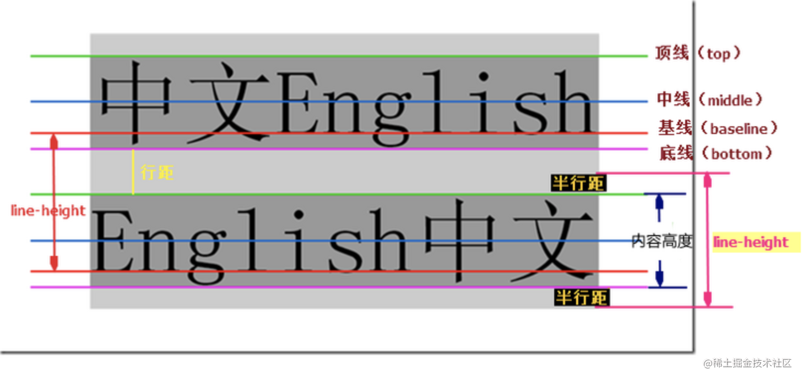
当半行距为负值（line-height < font-size）时，两行之间就会重叠，如下图所示：
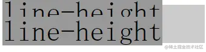
line-height 与 line boxes 的高度
CSS 中起高度作用是 height、line-height
若一个标签没有定义 height 属性(包括百分比高度)，那其最终表现的高度一定是由 line-height 起作用，即使是 IE6 下 11 像素左右默认高度 bug 也是如此
假设：有个空的 div，若没有设置至少大于 1 像素高度 height 值时，该 div 的高度就是个 0；若该 div 里打入一个空格或文字，则此 div 就会有个高度，此处根本不是文字撑开了 div 高度，而是 line-height
1 | // test1 div 有文字大小但行高为 0，结果 div 的高度就是个 0 |
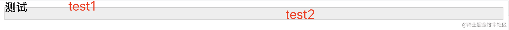
行内盒模型
行框（line box）：
- 指本行的一个虚拟的矩形框，由该行中
行内框组成 - 每行文字都是一个行框，当有多行内容时每一行都有自己的行框
- 行框的高度是这一行
行内框的最高点到最低点的距离 - 行框由上间距、文本高度、下间距组成，上间距的距离与下间距的距离是相等的
一个没有设置 height 属性的 div 的高度就是由一个个 line boxes 的高度堆积而成的
行内框（inline box）：
行框下的每个标签（文字、图片、<span>之类的inline属性的标签）都是一个单独的行内框行内框的高度等于font-size，设定line-height时行内框的高度不变，改变的是行间距
包含盒子 containing box：
- 元素中行框的高度垂直叠加形成包含盒子的高度，即元素的高度
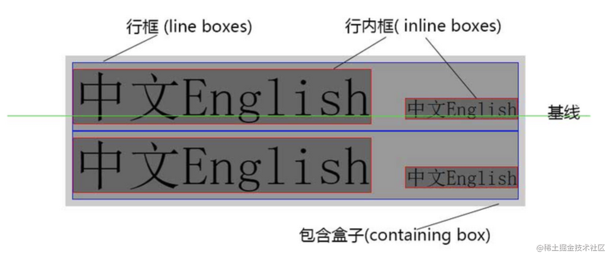
content area：
- 对于
非替换元素来说content area的范围由font-size以及字体本身决定 - 对于
替换元素来说，由元素自有宽高决定
W3C 对 content area 的解释：CSS 2.1 does not define what the content area of an inline box is (see 10.6.1 above) and thus different UAs may draw the backgrounds and borders in different places.
有种说法是行框的高度等于这一行中行内框中最大的 line-height，这种说法是错误的
下面代码中的 div 中的行内框最大的行高是 50px，但由于这个行内框存在 vertical-align 偏差，所以这个行框的高度大于 50 像素
即行框的高度是这一行
行内框的最高点到最低点的距离
1 | <div style="line-height:30px"> |
line box 高度
浏览器会计算 line box 中每一个 inline box 的高度，对于不同的 inline box 计算方式有所不同
若是一个替换元素（如
img、input等）、inline-*元素或是flexbox中的子元素，高度由其margin box决定inline-block 元素：这里spaninline box的高度是height+margin * 2，若height的值是auto，则高度就是等于line-height + margin * 21
2
3
4
5
6
7
8
9
10
11
12div {
background-color: #ccc;
color: #fff;
}
span {
display: inline-block;
height: 30px;
margin: 10px;
background: #fff;
color: red;
}
<div>xxx<span>xxx</span>xxx</div>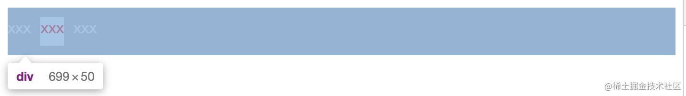
若是一个非替换元素，高度由它的
line-height决定，而不是content area，虽然有时候看起来像content area撑开了line box的高度1
2
3
4
5
6
7
8
9
10
11div {
background-color: #ccc;
font-size: 20px;
color: #fff;
font-family: Sana;
}
span {
background: #fff;
color: red;
}
<div>xxx<span>xxx</span>xxx</div>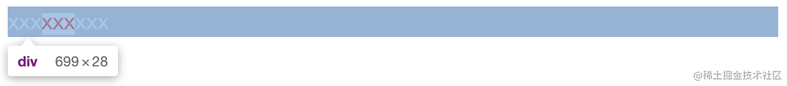
line box中所有inline box的最高点以及最低点决定了它的高度（该计算包括了strut的高度）浏览器认为每一个
line box的起始位置都存在一个宽度为0、没有任何字符的匿名inline box，称为strut。strut会从父元素继承line-height，因此它的高度会影响整个line box高度的计算在下面图片中可看到
img与外层的div存在一个间隙，这就是strut造成的1
2
3
4
5
6
7
8div {
background: #eee;
border: 1px solid #000;
box-sizing: border-box;
}
<div>
<img src="./image.png" alt="">
</div>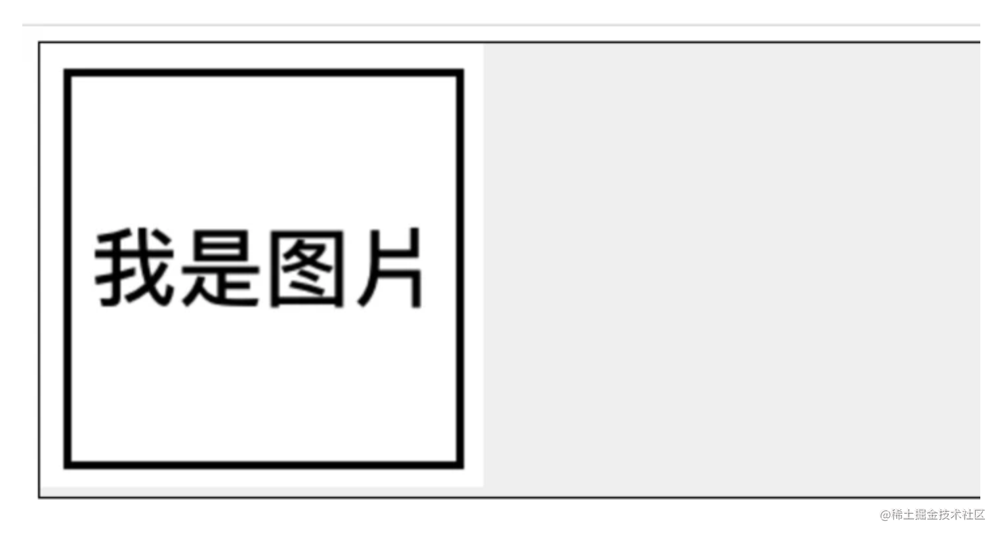
在这个例子中，默认情况下
img的底边与父元素的基线对齐（img { vertical-align: baseline; }），而这个基线实际上就是strut基线所在的位置，如下图所示：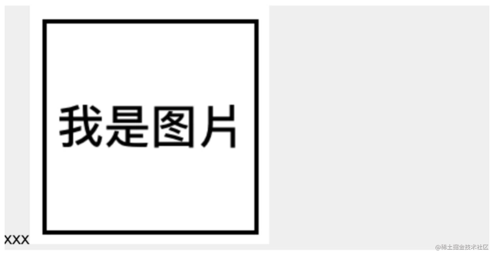
strut其实就相当于一个不可见的字母x，上文已经提到strut本身是具有line-height的，所以就导致图片底部多了一段间隙总结一下存在间隙原因：
strut存在line-heightvertical-align默认值为baseline
对应的解决方案：
解决方案 效果 潜在问题 修改 strut的line-height减少继承空间 strut的line-height不是能够直接设置的，所以需设置父元素的line-height，然后让strut继承，或修改font-size将图片的 vertical-align设置为其他值直接正确对齐图像 最佳方法 将图片的 display设为block删除内联级行为 块元素没有 vertical-align属性，所以不存在基线对齐(1) 和 (3) 点会影响父元素内的文字状态，所以第二种办法比较好
另外，非替换元素的 margin、padding 及 border 属性并不会影响 line box 高度的计算
当一个 inline-level box 的 line-height 小于 content area 时 line box 的高度就会小于 content area，此时元素的 background 以及 padding 等就会溢出到 line box 外
1 | div { |
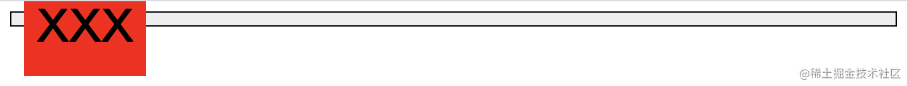
line-height 取值和继承
normal
默认值。一般情况下，浏览器默认的 line-height 为 1.2，因不同浏览器和字体变化，根据自身字体大小进行计算
其子元素不再继承父元素 line-height 计算后的最终值，而是先继承 line-height 这个属性然后根据自身的 font-size 来进行计算 –> 可见子元素随着自身 font-size 的大小而做相应比例的缩放

number
若既想要 normal 的灵活又想设置一个自定义的值，则可给 line-height 设置一个数字值
该方式与 normal 唯一的不同就是数值的大小，该方式可以自己随意设定，而 normal 的值是浏览器决定的，其后代元素会继承这个数值（如 1.5），然后根据自身的 font-size 算出自身的 line-height
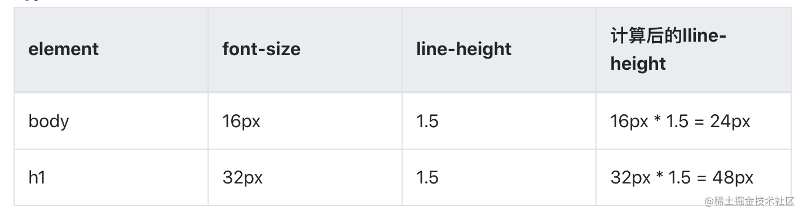
inherit
继承父元素 line-height 值，所以父元素的是多少就是多少，若其后代元素设置line-height 的话也会是这个值
length
设置固定的行间距。设置 line-height 为 20px，则该行的行高就是 20px，与 font-size 无关，不会随着 font-size 做相应比例的缩放
这个长度值会被后代元素继承，所有的后代元素会使用这个 line-height (20px)，除非后代元素自己设定 line-height
百分比 %
假设自身的 font-size 为 16px，line-height 设为 120%，则其行高为 16 * 120% = 19.2px，即 line-height 是根据自身的 font-size 计算出来的
子元素会继承父元素的 line-height，则它继承的是百分比 120% 还是 19.2px？答案是 19.2px，即父元素 line-height 计算后的最终值
总结
| 设置方式 | line-height ｜计算后的 line-height | 子元素继承的 line-height |
| — | — | — | — |
| inherit | 父元素的 line-height | 不用计算 | 父元素的 line-height 值 |
| length | 20px | 不用计算 | 20px |
| % | 120% | 自身 font-size(16px) * 120% = 19.2px | 继承父元素计算后的 line-height 值 19.2px，而不是 120% |
| normal | 1.2 | 自身 font-size(16px) * 1.2 = 19.2px | 继承 1.2，line-height = 自身 font-size * 1.2 |
| number | 1.5 | 自身 font-size(16px) * 1.5 = 24px | 继承 1.5，line-height = 自身 font-size * 1.5 |
注意：推荐 line-height 的值使用数值，而不是使用 em 单位，因为 em 单位须有个参照值且该参照值不是固定的，不同属性有不同的参照值
行高的垂直居中性
行高还有一个特性，叫做垂直居中性，line-height 的最终表现是通过 line boxes 实现的，而无论 line boxes 所占据的高度是多少（无论比文字大还是比文字小），其占据的空间都是与文字内容公用水平中垂线的
按照上面图片看 test1 的结果，此时 line boxes 的高度为 0，但它是以文字的水平中垂线对称分布的，这一重要特性可以用来实现文字或图片的垂直居中对齐
使用行高代替高度避免 haslayout
在某些情形下 line-height 可和 height 互换，因为实现的效果一样，都能撑开一个高度，然而这两个 CSS 属性有一个较隐蔽的差异 –> 即使用 height 会使标签 haslayout，而使用 line-height 则不会
以前只有 IE6 时曾流行使用 height 清除浮动，就是利用了 IE 下 height 触发 haslayout 的属性，但有时 haslayout 并不需要，反而要避免
使用 line-height 代替 height，其原因在于：
IE6/7下，类似inline-block属性的元素里若有block属性的元素，若该block haslayout，则该标签会冲破外部inline-block的显示而宽度100%显示，从使按钮自适应文字大小的效果失效解决：使用
line-height代替height
1 | <span class="out"> |
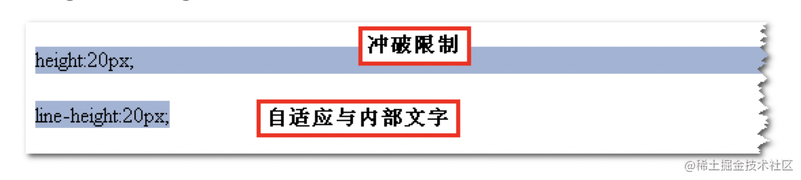